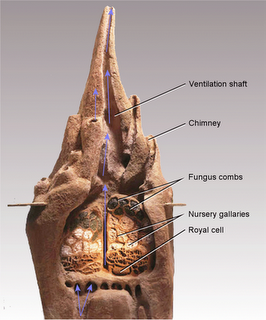

Bootstrapping the Noosphere
bootstrap (BOOT-strap)verb: Start something complex with minimal outside help.
no·o·sphere (NOH-uh-sfeer)noun: The global fusion of mind and machine which is emerging from the biosphere.
Animals Can...
spontaneously
work together
in huge numbers
Birds Do It
a flock of starlings = a murmuration
Birds Do It
start video
press F for fullscreen
see especially after 30 sec
Birds Do It

click to see the science
Bees Do It
Even Educated Fleas Do It
(termites)
What if
we could do that?
Today
we humans
work on the Internet
... with ideas
Ideas are graph structures.
Tom believes that Mary wants to marry a sailor.Communication is...
the art of transferring those graph structures from one mind to another.
Using only words
triangle, arrow, circle, arrow, square, arrowthis can be MORE
or LESS effective
{kind=link}
What is blocking collaboration?
- Our data, knowledge and opinions are locked in silos:
- desktop, smartphone and web apps
- databases
- spreadsheets
- ratings and comments scattered on the web
- Our data is in mutually incompatible formats.
- Our machines don't understand, so can't translate
- We can't reuse data in place, just copy/paste or export/import.
- Even when we can collaborate, then we must manage permissions.
- So we just keep repeating ourselves in various formats.
- There is so much we know but it is so hard to share.
improve how we think together
- If we TEACH THE COMPUTER what we know
- by POINTING at things on the WEB
- and we tell the computer our OPINIONS
- then the COMPUTER CAN EXPLAIN it to everybody
- help us FIND THE BEST stuff
- and keep track of HOW IT ALL FITS together
Why go to the trouble?
Not more trouble. Less.
We already:
- take notes
- make lists
- plan projects
- organize bookmarks
- suggest things to our friends
- keep contact lists
- make presentations
- rate things
- do our work
Let's just use a:
- powerful
- shareable
- personalizable
- extensible
- improving
consistent set of tools
to think alone
and think together
What can we teach the computer?
- new types of things:
Philosopher is a kind of Person. - new particular things:
Socrates was a Philosopher. - basic details:
Socrates died in 399 BC. - how things relate:
Socrates taught Plato.
anything!
Philosopher is a kind of Person
Philosopher ako Person.Socrates was a Philosopher.
Socrates isa Philosopher.Socrates died in 399 BC.
Socrates year-of-death: "399 BC".Socrates taugth Plato.
taught(teacher:Socrates, student:Plato)Putting it all together.
Philospher ako Person.
Socrates isa Philosopher;
year-of-death: "399 BC";
teacher-of(Plato).
Capture provenance.
Philospher ako Person ~ philo-ako-person.
Socrates isa Philosopher;
year-of-death: "399 BC";
teacher-of(Plato).
philo-ako-person;
asserted-by(Shawn);
on-date: "2012-09-22".
How will we work with knowledge?
- search and browse
- publish and visualize in many ways
- make new visualizations
- correct mistakes
- retract errors
- ask questions about things
- push something to someone
- propose alternatives
- notice and fix missing:
types, instances, data and relations - 'hang out' with fellow thinkers
- bookmark right into the system
How will we work with opinions?
- evaluate anything w.r.t. any criterion
- suggest some other criterion
- retract any evaluation
- create new criteria
- seek clarification
- express our opinions
- compare opinions
- filter, sort and display based on evaluations
- summarize opinions
What will keep it from being a jumble?
Sorting and filtering based on fine-grained opinions helps the good stuff come to the top.
artificial selection, based on opinion
What the 'top' is depends on:
- who you are
- what matters to you
- what you are looking for at that moment
Whose opinions you heed depends
on what subject you're dealing with
Gandhi might be wise
Einstein might be smart
and Trump might be rich
but we don’t ask them for hair advice.
goodness is not enough
People care about:
- quality
- brevity
- clarity
- beauty
- accuracy
and thousands of other criteria
criteria will self-organize
- IF people can add criteria
- THEN we will discover which matter
- AND what they apply to
worldviews emerge from criteria
- If people can add named worldviews
- which are oriented and ordered sets of criteria
- then we can use them
- share our worldviews with others
- compare worldviews
- see familiar things in new ways
- choose worldviews to make decisions with
- filter, sort and view things based on worldviews
What will it be good for?
- keeping us from having to repeat ourselves
- displaying information in different ways
- helping us cope with too much information
- helping us find what is best, in different situations
- helping us share the load without being a load
- helping us manage a map and catalog of everything.
improving our thinking
What will we do with
early investments?
- evolve this pitch
- create screen mockups
- clarify system specifications
- transform mockups into working screens
- make a knowledge-driven pitch
- make this pitch into a demo and proof of concept
- get feedback and support from developers and potential funders
prepare demo and crowdfunding pitch
What is the crowd funding for?
- make it able to handle LOTS of users
- make it easy to use on big computers and small
- provide support for basic kinds of data
- make some essential visualizations
- make it easy to extend
- make a bounty market to accelerate expansion
bootstrap the noosphere
Purpose:
make technology for
working and thinking together
- accelerate the evolution of knowledge
- accelerate the evolution of software
- accelerate the evolution of wisdom
- so individuals have faster, easier, more powerful tools
- so families, groups and businesses can be more efficient
- so we can easily reuse the work of others
- so we can easily get the help of others
- so we can make better, faster decisions
- so comprehension and mutual understanding are enhanced
- so we can take on the grand challenges together
- to make a world that works for everyone
esc toggles overview, down and up arrows to explore extra details